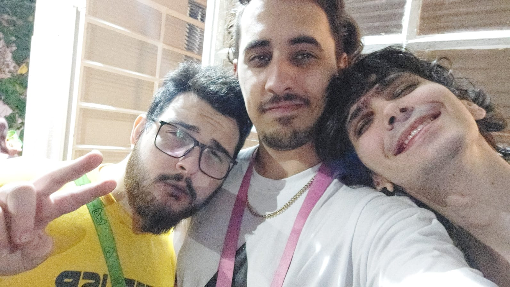

Sempre que ouvia "ain o Murilo é muito fechado eu lembro dessa foto e penso "Esse golden aqui?"
Todos eles tem muito orgulho do filho e irmão que você é

Esses aqui podem até não demonstrar tanto, mas gostam mt de ti
Ensinando o Joaca a mostrar a lingua, que bonito hein? kkkk
Sei o quanto você sentiu falta deles dois, e te ver sorrindo e brincando com eles só confirma o quanto você é amado
Você abriu sua casa pra uma pessoa que queria ir no Tusca, isso que é amigo!
Claro que NÃO pode faltar uma foto de você indo de dormes, essa espécie de mini trator é rara KKKKKK brincadeira, brincadeira
Você só é frio e calculista por fora né? Pq por dentro, É UM GOLDEN. Why sou serius?
Novamente, vemos o homem super sério com a linguinha pra fora e fazendo rostinho de peixe
A MELHOR experiência gastronômica que você já teve e vai ter em toda a sua vida!